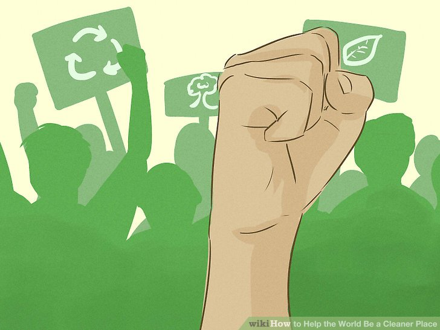

RULES FOR SAVING ABOUT ENVIRONMENT
Changing Your Daily Habits
- Switch off anything that uses electricity when not in use.
If you're not using it, turn it off. This goes for lights, televisions, computers, printers, and so on.
- Put timers on lamps and use them to turn off lamps at the same time each day. Timers like these can be found in hardware stores and they can be plugged into outlets, then control the power to your lamp.
- You can also find heaters and fans that have timers on them. So if it's cold or hot during the night it will switch off for you. Most of the timers go for an hour and then automatically switch off.
- Unplug devices when possible
Leaving devices plugged in, such as laptop chargers or toasters, can use "phantom" energy. Even when an appliance is turned off, it may still use power because the applications on the electronics will constantly use electricity. It is best to unplug anything that you do not anticipate using in the next 36 hours (or more).
- Use a power strip to turn lots of things off with the flip of a single switch. You can plug all your devices in one area —say, your computer—into a power strip. When you're done, simply turn the power strip off with the switch.
- Measure the energy your devices use or look up typical energy use. To measure usage yourself, use a Kill-a-Watt. You plug an appliance in through the Kill-A-Watt, and it measures the power use. This tool can also tell you whether a particular appliance or device draws power when it is turned off.
- Trade in your dryer for a good old-fashioned clothesline.
Air drying leaves your clothes smelling fresh and is environmentally friendly. Tumble dryers are among the biggest energy users in most households, after the refrigerator and air conditioner. If you do use a dryer, make sure to keep the vent clear, for safety as well as efficiency.
- Also, when using a washing machine, make sure you have a full load of dirty clothes. Do not just put a couple of dirty clothes into the washing machine as that wastes water. Instead make sure you have a full load of dirty clothing to conserve the water and electricity.
- If you want, you can also hand wash clothes in a sink or buy a energy efficiency washing machine that doesn't use a lot of water.
- Run your air conditioner sparingly or not at all.
Air conditioners use a great deal of electricity. Use natural ventilation or a fan to keep cool, as much as possible.
- If you do use an air conditioner, set it to a slightly lower temperature than outside. Remember that setting the temperature lower uses more electricity, and it won't cool things off any faster.
- Close the heating and air conditioning vents in your home.
If you are not using certain rooms in your house, close the vents in these rooms, and close the doors. Doing this consistently will reduce the amount of energy squandered by heating or cooling seldom occupied spaces.
- Don't use electronic exercise machines.
Instead of using exercise equipment, use a real bicycle (or a unicycle), or walk to get to nearby destinations or for pleasure. Calisthenics, push-ups, and other bodyweight exercises work, as well.
- Use a warm blanket or sweater in winter.
Bundle yourself up and lower your thermostat by a few degrees. Aim to set your thermostat at 68 degree F (20 degree C)in the winter, perhaps even lower at night. Every degree above this will generate about 6-8% additional energy output.
- Conserve water.
The average family of four in the U.S. uses about 400 gallons (1,514L) of water every day. Make conscious choices to lower your consumption of water.
- Take shorter showers or fill the bathtub only one-quarter to one-third full.
- Turn off the faucet while you brush your teeth.
- Install low flow faucets (taps) or aerators, low-flow shower heads, and low-flush toilets.
- Run your dishwater only when it is completely full.
- Wash full loads of laundry in a washing machine. Choose a front-load machine if possible.
- If you hand wash your car, park it on your lawn and use buckets and sponges. Use a hose nozzle to stop the water or turn the hose off between rinses. Keep in mind, however, that the soap and other cleaning products might go down the storm drain( If you have one), leading to pollution.
- If you have a swimming pool, use pool covers to reduce evaporation and keep leaves out.
- Plant drought tolerant landscaping, and consider xeriscaping. Maintain your outdoor irrigation and water no more than is necessary.
- Recycle all you can.
If you have curbside recycling, use it. Be sure to separate your recycling into glass, metal, paper and so on.
- Take special trips to a recycling center if you don't have curbside recycling, or if you need to recycle certain materials not accepted by your recycling service.
- Avoid using disposable items.
Anything you use only a few times and throw away consumes resources only to spend centuries in a landfill.
- Carry your own reusable cup or water bottle, eating utensils, and cloth shopping bags with you. Pack a waste-free lunch.
- Use rechargeable batteries instead of disposable batteries.
- Use only as much toilet paper as you need.
Don't unwind a mile of it for one little wipe. Be reasonable. Go easy on the paper towels, too, and use a washable cloth or sponge for most of your kitchen cleanup.
- For the paper products you do use, look for products made from 80-100% recycled paper, preferably with a high post-consumer content.
- For most household cleaning, look for reusable terry cleaning cloths. They are inexpensive, especially when bought in bulk, and can be washed and reused hundreds of times.
- Consider using cloth diapers.
Cloth diapers have come a long way from the things with pins and plastic covers. You will save a fortune (especially if you have more than one child), keep potentially dangerous chemicals away from your baby's skin, and do a good thing for the planet while you're at it.
- Stop your junk mail from coming.
If you get several catalogs which you do not need, call and ask them to stop sending them to you.
- Be a mindful consumer.
Ask yourself how your purchase are impacting other people and the natural environment.
- Do not buy what you do not need. Besides saving money, you'll save resources if you don't purchase a lot of excess stuff.
- Buy for durability. For items you do buy, look for things which will last a lifetime.
- Buy used. Reuse is a far higher purpose for used goods than the landfill, plus you'll save money.
- Borrow or rent items you need only for brief or occasional use.
Changing Your Eating Habits

- Eat less meat and dairy
Meat and dairy production is highly resource-intensive and inefficient. Attempting vegetarianism or veganism is definitely one of the best things you can do for the environment and also for your health.
- Don't drink coffee from K-cups.
K-cups, or the mini pods of ground coffee for Keurig coffee makers, are single use and typically thrown out. Billions of mini cups of ground coffee were sold in 2014, and the number of cups that ended up in landfills could circle the earth 12 times. Brew coffee in a regular coffee pot or French press instead.
- Use a mug or other reusable cup for your coffee instead of a disposable cup.
- If you love the convenience of single-serve coffee and have already invested in a Keurig machine, lool for a washable, refillable cup. You'll still save money and resources, compared to purchasing the indivisual cups.
- Buy local food.
Transporting food from far-off locations takes a toll on the environment, as it must be shipped in trucks, by rail or by ship, all of which produce pollutants. Buying food that is sourced locally will help eliminate or reduce transportation impacts.
- Visit farmers markets to find local vegetables and fruits or use a CSA(community—supported agriculture) service to get fresh produce on a regular basis.
- Avoid excess packaging.
Oftentimes, food companies expend just as much energy creating the packaging for food products as is expended in producing the actual food. Try not to buy food that is individually wrapped or buy in bulk.
- Don't waste food.
Plan your meals so eat. Store your leftovers and use them up at your next meal. If you do have an overrun of food, such as after a party, share it with friends.
- Use reusable bottles for water.
Most tap water in developed countries is safe to drink, which means that buying bottled water is unnecessary. Buy a glass or metal bottle and fill it with water.
- Request a water quality report from your city if you are concerned about the quality of the water.
- A water filter is generally unnecessary, but even a simple one can improve the taste. Remember, however, that water softeners and reverse osmosis systems waste a lot more water than they deliver.
- Fill a pitcher with tap water and chill it in your refrigerator.
- If your tap water has a whitish, cloudy appearance when first poured, it may just be air bubbles. Try pouring some into a glass or bottle, and look again in a minute or two, to see if they rise out.
Method Three of Seven:
Changing Your Transportation Habits
- Walk or bike for local trips.
Walk or ride a bicycle when your destination is close to home. Short trips are generally hardest on your car and on the environment, so swap out your car for your feet or bike.
- Always wear a helmet and safety reflective gear when riding a bicycle.
- Get what you need to carry cargo on a bike and do your shopping on two wheels, too. You can carry a lot with panniers, a bike trailer, or a study basket.
- Organize a carpool for work or school.
Coordinate with another person or two to carpool to work or work with other parents in the neighborhood to carpool kids to school.
- Carpooling will also enable you to take the High Occupancy Vehicle(HOV) lane on a highway. This lane will usually save time and money on gasoline.
- If you live near your children's school, consider organizing a "walking school bus" instead of driving. Children walk to school together in groups, supervised and guided by parents. Neighborhood parents can take turns leading the group.
- Take mass transit.
If you live in an area that has a bus, light rail, or subway system, consider taking this option to get to work, school or other destinations. Reducing car trips in favor of mass transit trips reduces congestion on roads and reduces the amount of gasoline that is used.
- Many bus systems in major cities operate diesel —electric hybrid buses, which further reduces harmful emissions.
- Plan out your errands and combine trips
Make errand trips more efficient by planning out where you will go and hitting all your stops in one trip.
Group outings into fewer, longer trips, and plan them out so that you're not driving the same path multiple time.
- Don't forget to call ahead or check online, to make sure you'll arrive during business hours and that what you want is available. Make appointments and purchases online or by phone, too.
- Telecommute or work from home
If your job permits you to do so. One day per week reduces your commute transportation by 20%.
- Drive a hybrid or all-electric car.
If you have been looking for a new vehicle, consider buying a hybrid car. Hybird cars run on both gasoline and electric motors. There's a growing selection of both hybrid and all-electric cars on the market. They not only give off less emissions into the air, but they also can save you money with fewer trips to the gas station.

- Maintain your car.
If you do have a car, keep it in good repair by changing the oil and air filter on schedule, repairing fluid leaks promptly, keeping the tires properly inflated.
- Track your fuel economy
Track your fuel economy and do all you can to improve it.
- Take fewer airplane flights.
Whether for work or vacation, lower the number of flights you take. Airplanes emit vast quantities of carbon dioxide, and other polluting materials, which increases annually due to increased numbers of flights around the world. Do your part by taking fewer flights.
- Live near work, school, and other frequent destinations, if possible.
Otherwise, try to live near transit or bicycle routes. If you are choosing a residence, consider transportation options as part of the process.
Method Five of Seven:
Adapting your yard
- Plant a garden
Create a garden plot with vegetables , fruits, and/or herbs.
- Try to implement techniques so that your garden does not require fertilizers
- Make your yard-friendly to wildlife.
Modern developments encroach upon natural habitats and pose risks to wildlife. Take some steps to make your yard friendlier to wildlife.
- Reduce the area of lawn.
Grass areas usually require more frequent maintenance with lawn mowers, weed eaters, and other gas or electric-powered tools. Convert some of your lawn to garden or native plants, which will also attract wildlife.
- Avoid pesticides, herbicides, and man-made chemical fertilizers.
Pesticides kill hundreds of birds and other animals per year. If you have unwanted weeds, pull or hoe them out yourself. Ensure that excess fertilizer is not washed into storm drains or waterways.
- Plant a tree.
Add a tree to your yard. Trees absorb carbon dioxide and emit oxygen. You can harvest your own fruit instead of needing to buy it at a store.
- Make a compost area
Designate an area in your yard to put your yard waste, fruit peels, and uneaten food. Find some worms who can break the waste down and produce a very rich soil that works great with your landscaping. Keep your compost heap as far from all water sources as possible.
- Use a rake instead of a leaf blower.
Ditch your noisy electric or gas powered leaf blower.
Method Six of Seven:
Reusing Items
- Buy secondhand clothes and other items.
Visit thrift stores and consignment shops to find secondhand clothes and other items.
- Donate or share usable household items
Instead of throwing away items, consider giving them away. Donate usable clothes and household items to charity. Many organizations will send a truck for pickup.
- Upcycle.
Turn useless junk into something fun and cute, or fresh and funky. Make jewelry , household accessories, and restyled clothing from things you already own. Look around wikiHow to find tons of articles about how to make different things.
- Buy or make a few reusable fabric bags.
Bring them with you whenever you go shopping. Many communities have banned stores from giving out plastic bags, but even if your community still allows them, move to using reusable bags instead.
Engaging in Activism
- Contact your government officials.
Call or email your congressional representatives and local officials. Ask them to support environmental conservation and renewable energy.

- Participate in rallies
Most cities hold rallies to raise awareness of environmental issues. To be effective , these demonstrations need lots of people. Attend a rally in your community. Make signs to carry during the demonstration to convey your message.
- Join an environmental organization
Choose an organization that focuses on an aspect of the environment, such as Greenpeace, the Sierra Club or the Environmental Defense fund, and become a member.
- Write a letter to the editor.
Use the news media to highlight environmental issues. Write a letter to the editor about fossil fuels or endangered animals. This can help start a dialogue in your community about a particular environmental issue.
- Donate to an environmental cause
Choose an organization working on an environmental issue. Donate money to this organization.

- Volunteer your time.
Pick up litter, educate others, fix bikes, start a repair cafe, plant trees, observe birds and animal populations. There are many ways you can create and promote a better environment by volunteering.